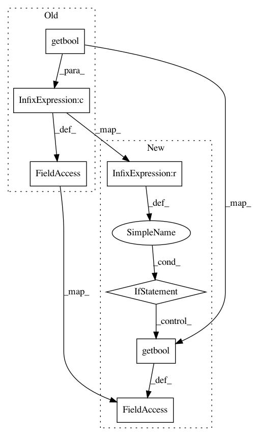

8cb65ad9a7a0093c21773074d1c1d16fa9104b5f,src/python/twitter/pants/tasks/scala_compile.py,ScalaCompile,__init__,#ScalaCompile#Any#,65
Before Change
context.options.scala_compile_flatten if context.options.scala_compile_flatten is not None else \
context.config.getbool("scala-compile", "default_to_flatten")
self._color = (
context.options.scala_compile_color
and context.config.getbool("scala-compile", "color", default=True)
)
self._compile_profile = context.config.get("scala-compile", "compile-profile") // The target scala version.
self._zinc_profile = context.config.get("scala-compile", "zinc-profile")
self._depemitter_profile = context.config.get("scala-compile", "dependencies-plugin-profile")
After Change
context.config.getbool("scala-compile", "default_to_flatten")
// We use the scala_compile_color flag if it is explicitly set on the command line.
self._color = \
context.options.scala_compile_color if context.options.scala_compile_color is not None else \
context.config.getbool("scala-compile", "color", default=True)
self._compile_profile = context.config.get("scala-compile", "compile-profile") // The target scala version.
self._zinc_profile = context.config.get("scala-compile", "zinc-profile")
self._depemitter_profile = context.config.get("scala-compile", "dependencies-plugin-profile")
In pattern: SUPERPATTERN
Frequency: 3
Non-data size: 7
Instances
Project Name: pantsbuild/pants
Commit Name: 8cb65ad9a7a0093c21773074d1c1d16fa9104b5f
Time: 2012-07-25
Author: leo@foursquare.com
File Name: src/python/twitter/pants/tasks/scala_compile.py
Class Name: ScalaCompile
Method Name: __init__
Project Name: pantsbuild/pants
Commit Name: 743fae177c7bbaa61725d108148748a4118346d1
Time: 2013-03-19
Author: leo@foursquare.com
File Name: src/python/twitter/pants/tasks/scala_compile.py
Class Name: ScalaCompile
Method Name: __init__
Project Name: pantsbuild/pants
Commit Name: 1a7fffdda164f0022eef500c12167cd1aee9a306
Time: 2013-03-29
Author: markcc@foursquare.com
File Name: src/python/twitter/pants/tasks/scala_compile.py
Class Name: ScalaCompile
Method Name: __init__